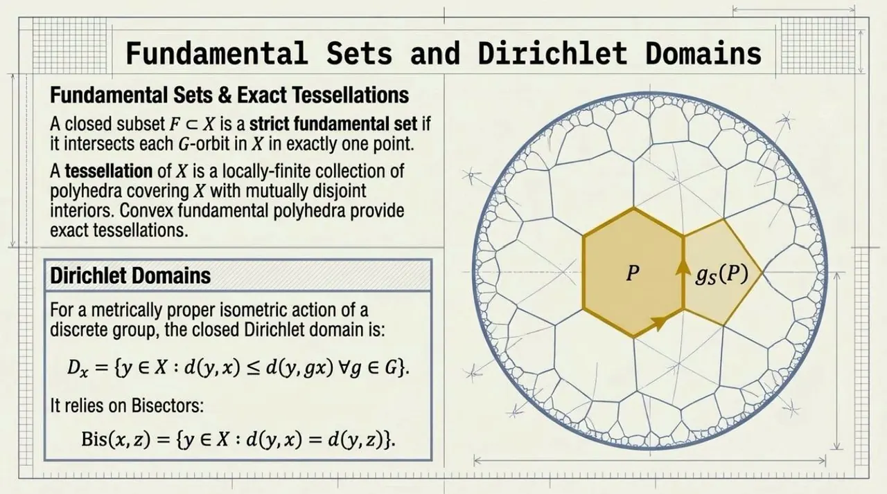
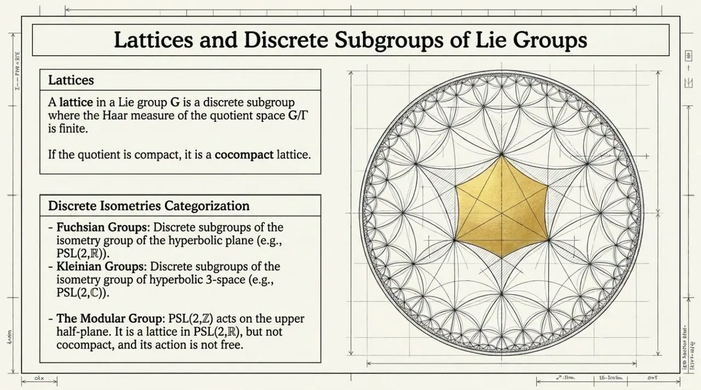

기둥 2 · 무리가 공간을 움직이는 법 · 09장
타일과 격자 — 한 조각으로 바닥 전체를 덮기
기본 영역, 디리클레 영역, 그리고 위로 끝없는 쌍곡 타일
기본 영역, 디리클레 영역, 그리고 위로 끝없는 쌍곡 타일
핵심 질문 — 얌전한 도장 무리가 있으면, 바닥 전체를 빈틈없이 덮는 「대표 타일 한 장」을 어떻게 만들까?
08장의 고유 불연속 작용이 있으면, 공간을 타일처럼 나눌 수 있어요. 궤도마다 대표 하나씩 모은 기본 영역, 「가장 가까운 격자 점」으로 나눈 디리클레 영역이 그 타일이에요. 마지막에는 위로 끝없이 뻗었는데도 넓이가 유한한 신기한 타일(모듈러 군)로 격자의 뜻을 봐요.
숫자 요약은 이 장의 예시 계산에서 나온 값입니다(실제 데이터가 아닌 설명용 값).
조별 과제: 바닥을 빈틈없이 덮는 타일 한 장을 디자인하세요. 재료는 격자 도장!
1조는 정사각형 격자로 할게요. 모양은 당연히 정사각형이겠죠?
행렬·벡터, 복잡한 공식을 몰라도 됩니다. 그림을 움직여 보고, 밑줄 친 말을 누르면 뜻이 나옵니다.
이 페이지 사용법: 밑줄 친 말을 누르면 뜻이 나옵니다(Esc로 닫기). 단계마다 그림을 직접 움직여 보고, 끝의 확인 퀴즈로 점검하세요. 앞 장: 08 얌전한 작용의 등급 — 도장이 말썽을 부릴 때
과제: 「격자 도장으로 바닥 전체를 덮는 타일 한 조각을 디자인하라.」 1조는 정사각형 격자, 2조는 벌집 격자를 맡아 타일 모양과 둘레를 비교해요.
2조는 벌집! 꿀벌은 육각형을 좋아한대요.
…둘레 숫자는 내가 셀게.
타일 한 장 + 도장 무리 = 무늬 전체. 09장의 핵심 아이디어예요.
디리클레(보로노이) 영역은 기지국 구역, 결정의 원자 영역 등 현장에서 계속 나와요.
격자는 「몫공간의 넓이(부피)가 유한」인 이산 부분군이에요. 콤팩트(04장)하지 않아도 격자일 수 있다는 점이 놀라워요.
이 장에는 행렬로 쓰는 군(PSL(2, ℝ) 같은 것)이 나오지만, 행렬 계산은 하지 않아요. 「평면을 옮기는 도장의 한 종류」라고만 보면 충분합니다.
상황 질문 — 욕실 벽 무늬가 「같은 타일을 가로세로로 옮겨 붙인 것」이라면, 타일 한 장이 벽 전체의 정보를 담고 있다고 할 수 있을까요?
욕실 벽은 같은 정사각형 타일을 가로세로 한 장씩 옮겨 붙인 것이에요. 타일 한 장의 모든 점이 벽 위 「같은 위치」 무리의 대표예요.
ℤ²가 평면에 평행이동으로 작용하면 [0,1)×[0,1)이 각 궤도와 정확히 한 점에서 만나는 기본 영역이에요. 닫힌 정사각형 [0,1]²의 사본들은 안쪽이 겹치지 않고 평면을 덮어요 — 이런 덮기를 타일 덮기(쪽매맞춤)라 해요.
그림 아무 곳이나 눌러서, 그 점의 궤도와 노란 타일 속 대표를 확인해 보세요.
타일 안에 대표가 여러 개면 더 좋겠죠!
여러 개면 「같은 위치」를 두 번 센 거야. 정확히 하나여야 해.
원자료 「Fundamental Sets and Dirichlet Domains」 왼쪽 위: 엄밀 기본 집합과 타일 덮기(쪽매맞춤)의 정의.

상황 질문 — 마을마다 기지국이 하나씩 있다면, 각 기지국의 담당 구역은 어떻게 나누는 게 공평할까요?
D_x = {y ∈ X : d(y, x) ≤ d(y, gx) ∀g ∈ G} 이건 거의 외계어예요.
학교 수학으로 보면: 중학교 2학년 「수직이등분선 위의 점은 두 끝점에서 같은 거리」와 피타고라스 거리 공식이에요. ∀는 「모든」이라는 기호예요.
| 식 조각 | 읽는 법 | 뜻 |
|---|---|---|
| d(y, x) | 디 와이 엑스 | 점 y와 x 사이 거리 (피타고라스로 계산) |
| ∀g ∈ G | 모든 지에 대하여 | 도장 g 전부에 대해 |
| Bis(x, z) | 바이섹터 | x와 z에서 같은 거리인 점들 = 수직이등분선 |
정사각형 격자: 원점 x = (0,0), 이웃 (1,0), (0,1), (−1,0), (0,−1)
(0,0)과 (1,0)의 수직이등분선: x = 0.5
네 이웃의 이등분선 x = ±0.5, y = ±0.5로 자름 → 한 변 1인 정사각형, 넓이 1, 둘레 4
벌집 격자(두 번째 걸음 (0.5, 0.87)): 이웃 6개 → 정육각형, 넓이 0.87, 둘레 약 3.46
수직이등분선은 중학교 작도에서 배웠는데, 그걸로 타일을 깎는 거네요!
기지국이 마을에 고르게 퍼져 있으면, 각 기지국의 「가장 가까운 구역」은 서로 맞닿는 다각형이 되어 지도를 빈틈없이 나눠요.
격자 점 x의 디리클레 영역 D_x는 x에 가장 가까운 점들의 모음이고, 이웃 격자 점들과의 수직이등분선 Bis(x, gx)로 둘러싸여요. 고유 불연속 등거리 작용이면 D_x는 기본 영역이 돼요.
「정사각형 격자」와 「벌집 격자」를 번갈아 누르고, 변의 개수와 둘레를 비교해 보세요.
정사각형이 둘레 4, 육각형은 변이 6개니까 둘레가 더 길겠죠!
넓이도 같이 봐. 같은 넓이로 맞추면 누가 더 짧을까?
원자료 왼쪽 아래 「Dirichlet Domains」 상자: D_x의 정의와 이등분선 Bis(x, z). 오른쪽 그림은 쌍곡 평면의 다각형 타일 P와 그 사본 g_s(P).
상황 질문 — 위로 끝없이 뻗은 땅이 있다면, 그 넓이는 반드시 무한일까요?
π/3 − 1/T에서 T가 커지면 어떻게 돼요?
학교 수학으로 보면: 중학교 분수 1/T: T가 커질수록 0에 가까워져요. 그러면 π/3 − 1/T는 π/3에 가까워져요(극한, 고등학교).
| 식 조각 | 읽는 법 | 뜻 |
|---|---|---|
| ℍ | 위쪽 반평면 | y > 0인 평면의 위쪽 절반 (쌍곡 평면의 지도) |
| dx dy / y² | 높이 y에서 넓이를 1/y²배로 줄여 재는 「쌍곡 넓이」 | |
| π/3 − 1/T | 높이 T에서 자른 기본 영역의 쌍곡 넓이 |
T = 2: 1.0472 − 0.5 = 0.5472
T = 10: 1.0472 − 0.1 = 0.9472
T = 100: 1.0372
T → ∞: π/3 ≈ 1.0472에서 멈춤 → 넓이 유한
위로 끝없이 가도 1.0472를 못 넘는다니! 1/2 + 1/4 + 1/8 + … 이 1을 못 넘는 것과 비슷한 느낌이에요.
위로 갈수록 자의 눈금이 늘어나는(같은 길이가 더 짧게 재지는) 지도를 상상해요. 높은 곳의 넓은 땅은 실제로는 아주 작게 재져서, 끝없이 높은 띠도 넓이가 유한할 수 있어요.
격자: 띄엄띄엄한 도장 무리 중, 접은 공간의 넓이(「옮겨도 안 변하는 넓이」 = 하르 측도)가 유한한 것. 모듈러 군(정수 네 개로 만든 도장 무리)은 격자이지만, 기본 영역이 위로 끝없이 열려 있어 「콤팩트한 격자(코콤팩트)」는 아니에요. 고정점도 있어 자유 작용도 아니에요. (정확한 기호는 접기 상자에)
자르는 높이 T를 60까지 올리며 넓이 숫자를 보세요.
높이가 끝없으면 넓이도 끝없어야죠. 60이면 이미 엄청 커요!
숫자 자체를 봐. 1.0472를 넘었어?
원자료 「Lattices and Discrete Subgroups of Lie Groups」: 격자·코콤팩트 격자, 푹스 군(PSL(2, ℝ)), 클라인 군(PSL(2, ℂ)), 모듈러 군 PSL(2, ℤ).

모듈러 군의 기본 영역 F = {z : |Re z| ≤ 1/2, |z| ≥ 1}의 쌍곡 넓이: ∫∫_F dx dy / y² = ∫_{−1/2}^{1/2} (1/√(1−x²)) dx = π/3. 높이 T에서 자르면 π/3 − 1/T. 푹스 군은 PSL(2, ℝ)(쌍곡 평면의 방향 보존 등거리 변환)의 이산 부분군, 클라인 군은 PSL(2, ℂ)(쌍곡 3차원 공간)의 이산 부분군이다.
X2가 AI에게 「넓이가 유한한 영역은 콤팩트하죠? 그러니 모듈러 군은 코콤팩트 격자죠?」라고 물었어요.
「넓이 유한」과 「콤팩트」처럼 비슷해 보이는 두 성질을 AI가 하나로 합치면, 끝없이 뻗지만 얇아지는 예를 떠올려 보세요.
모듈러 군의 기본 영역을 높이 10, 100, 1000에서 잘라 쌍곡 넓이를 재면 끝없이 커질까?
「π/3 근처에서 멈춰. 위로 갈수록 자가 넓이를 줄이거든.」
「높이가 끝없으니 넓이도 끝없이 커져요!」
누가 맞을지 먼저 예상해 보고 단추를 누르세요. 판정은 계산 결과로만 합니다.
개념정리 흐름: 기본 영역과 타일 덮기 → 디리클레 영역 → 격자와 모듈러 군
| 개념 | 한 줄 뜻 | 일상 비유 | 비유의 한계 |
|---|---|---|---|
| 기본 영역 | 궤도마다 대표를 모은 타일 | 욕실 타일 한 장 | 테두리 점은 여러 번 들어갈 수 있음 |
| 디리클레 영역 | 가장 가까운 점 구역 | 기지국 담당 구역 | 실제 기지국은 지형·출력이 달라 다각형이 아닐 수 있음 |
| 수직이등분선 | 두 점에서 같은 거리인 선 | 두 마을 경계선 | 쌍곡 평면에서는 「곧은 선」의 모양이 원호 |
| 격자 / 코콤팩트 | 몫공간 넓이 유한 / 거기에 콤팩트까지 | 줄어드는 자로 잰 땅 | 하르 측도는 대학 수학 — 여기서는 결과만 확인 |
| 모듈러 군 | 넓이 π/3, 코콤팩트 아님, 자유 아님 | 끝없이 높은 타일 | 행렬로 쓰는 군이지만 이 페이지에선 계산 안 함 |
과제 채점: 1조 정사각형 둘레 4, 2조 육각형 둘레 약 3.46 — 넓이를 맞춰 비교한 2조에 가산점!
꿀벌 최고!
정사각형이 가장 단순한 줄 알았는데, 가장 효율적인 건 아니었네요.
높이 끝없음 = 넓이 끝없음… 아니었어요.
다음 장 예고: 10장 발표수업에서는 1조가 「빙글빙글 주차장」으로 덮개 공간과 길 들어올리기를 발표해요.